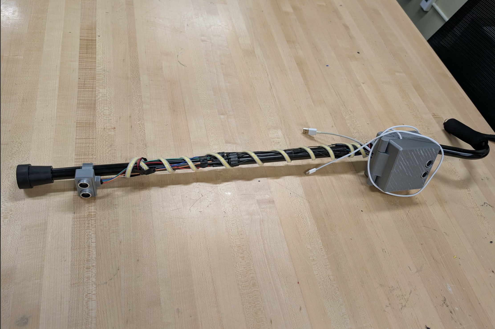
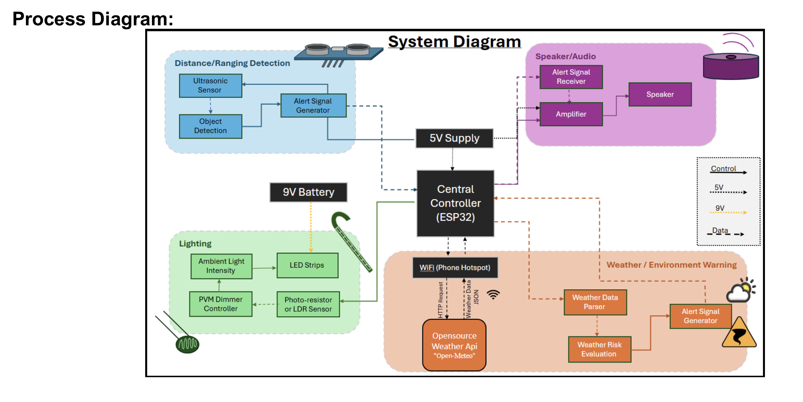
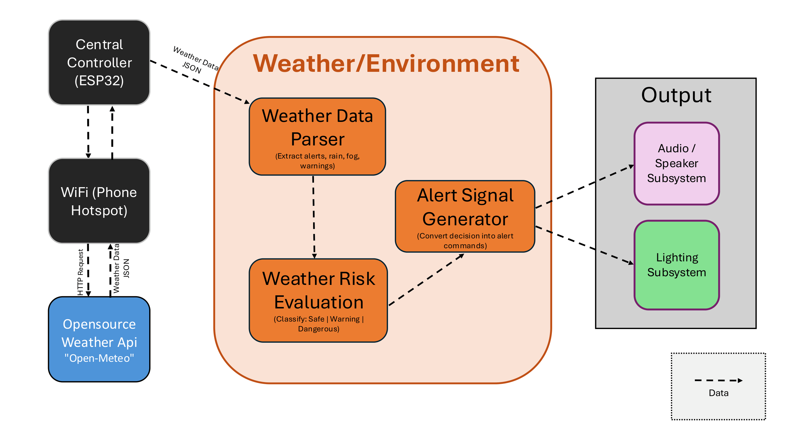

Smart Cane with Warnings and Weather Alerts

Class group project for an intelligent cane system that combines ultrasonic sensing, weather alerts, and audio feedback. My work covered WiFi connectivity, API integration, text-to-speech playback, and the full FreeRTOS restructure that made the integrated system actually stable.
My Contribution
- Implemented WiFi connectivity for online updates and live request handling
- Integrated current-weather and weather-alert APIs for location-aware alerts
- Added Google Translate-based text-to-speech audio output for spoken notifications
- Worked with the ultrasonic sensor flow used for obstacle detection warnings
- Diagnosed system instability in the integrated build and restructured the code so sensing stays in a non-blocking loop on one ESP32 core and the blocking network and audio work runs in a FreeRTOS task on the other
The Integration Problem
Each module worked fine in isolation. Once we integrated everything: sensor reads, API polling, TTS playback: the system became unreliable. Sensor updates were delayed, alerts misfired, and behavior was inconsistent under any real processing load. The single-loop architecture meant every operation was blocking everything else.
I isolated the timing of each component to figure out where delays were
accumulating. The issue wasn't in any individual module: it was the
architecture. Putting everything sequentially in loop() meant
a slow API call would starve the sensor, and a TTS output would block the
whole system.
FreeRTOS Restructure
I split the work by how long each part can block, and gave each half its own core:
- core 1, main loop: reads both ultrasonic sensors, drives the buzzer, checks the button and controls the light. It uses
millis()timing and makes no WiFi, HTTP or audio calls, so nothing in it waits on the network - core 0, network task: a FreeRTOS task for WiFi, the weather and alert requests, and text-to-speech playback. Blocking is fine here because it can't hold up the sensors
The two sides share a mutex-protected weather struct and a few flags (button press, speaking, warning active), and spoken phrases wait in a FreeRTOS queue until the player is free. After the split, sensor readings stayed consistent while the cane was fetching or speaking, and the system ran stably through extended testing. A new feature now just means deciding which side it belongs on.
Process Diagrams


Source Code
Tech Stack
ESP32, FreeRTOS, C, WiFi, Ultrasonic Sensing, Google Translate API, Weather API, Text-to-Speech